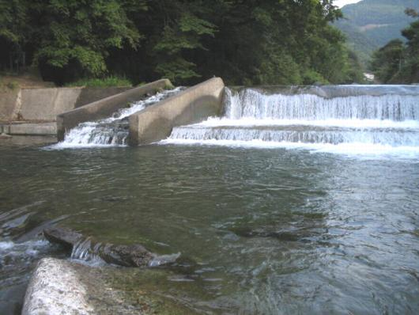
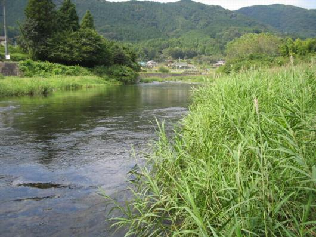
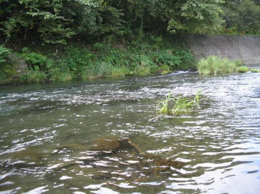
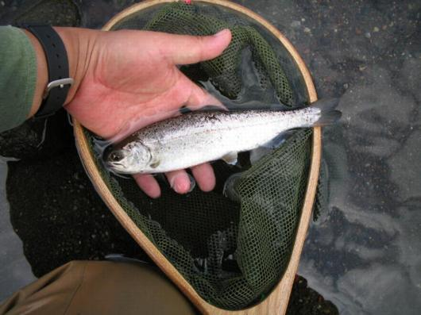
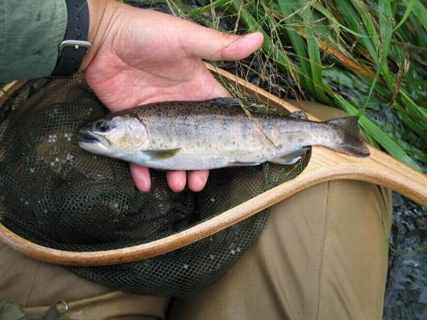

釣行日誌 故郷編
2007/09/26 10年ぶりのアマゴ
朝の五時半に目覚ましをセットしたのに、目が覚めたのは三時半だった。このままでは寝つけそうに無かったので、起きて出発する事にした。お気に入りの、ダイロンで緑色に染めたシャツを着て、新調した沢登り用のズボンを履く。釣り道具一式の入った防水かばんを車に積んでいざ出発である。カーステレオからは、山下達郎の Sparkle が鳴り出す。この曲を聞くと、心が湧きたって、いざ出陣！という感じになるのである。
あらかじめ紙に書き出しておいた目的の渓谷までのルートを見ながら、国道を東に走る。カーナビなどという便利な物は付いていないので、昨晩道路地図を見ながら下調べをしておいたのだ。久しぶりの今回の釣行は、大学時代の先輩にあの川が良いと聞きこんで行く気になったのである。
県境を越え、峠を越え、谷を渡る橋に到着したのはまだ朝も明け切らぬ闇の中だった。車を降りて橋の上から川の流れを見下ろすと、夜の中に細い流れが浮かんで来た。思っていたよりは規模の小さな川である。両岸に葦がびっしりと生えており、遡行は難しそうである。もうちょっと下流から入った方が良いかなと思い、車で下流に向かう。橋を渡る度に車窓から覗いてみるが、なかなか良さそうな入渓ポイントが無い。どんどんと下るうちに、とうとう本流との合流点まで来てしまった。あれれ。こりゃいかんと引き返しているうちに夜が白々と明け始め、車を停めるのにちょうどいい場所まで来たところで明るくなった。ここ以外には停められそうな場所がなかったので、入渓することとした。Ｍサイズのウェーダーに、きつきつになってしまったメタボリックな腹を押し込み、久しぶりにウェーディングシューズを履く。紐をきっちり締めると、戦闘意欲がもりもりと湧いてくる。
少し歩いて下流に行くと、ちょうどよく川に降りる階段が付いていた。水際に腰掛けて、ロッドを継ぎリールをセットしてラインを通す。リーダーは５Ｘの１２ftを結び、１４番のエルクヘアカディスを選んだ。すっとティペットがフックのアイを通るはずが、どうもよく見えない。おかしいなぁと思って、フックを遠ざけるとよく見えるようになった。近づけるとぼやけてしまって見えない。ガーン！ これはもしかして、老眼というやつか！？ 愕然とフライを見つめるが、遠ざけたほうがよく見えるのは事実である。いやはや。戦闘意欲がポシャーンとしぼむが、気を取り直して釣りを始める。最初のポイントは、ここに居なければどこに居る！ というような落差工の淵であるが、気を緩めずその下の淀みから攻め始める。淀みの流れ出し、流れ込み。淵の尻、中央、流れの脇、落ち込みの白泡、すばらしいポイントがいくつもあるが、魚の反応は無い。仕方が無いのでここはあきらめ、魚道を歩いて登って上流へと向かう。

落差工の上流の、長く続く瀬を歩いていくと、ここら辺りはカニが捕れるのか、瀬のあちらこちらにカニ籠が仕掛けてあるのが目に付いた。こりゃ、下流に入りすぎたかな？ と思っていると、上流から長靴を履いたおじさんが歩いてきた。聞くと、カニ籠を確かめているとのこと。もっと上流がいいのですかねぇと訊ねて見ると、うーん、よくわからんという返事。せっかく地元の人に会えたのに、肝心な情報は得られなかった。なにせ初めて入る川なので、どこらへんが良いポイントなのか、まったくわからないのである。ここよりしばらく上流はおじさんが歩いているはずなので、道路に上がって車にいったん戻り、もう少し上流から釣る事にするが、この川の両岸はしっかりと護岸が整備されていて、文字通り取り付くシマも無い。おまけに岸沿いには葦がびっしり生えており、歩くのも一苦労である。なんとか登れる場所はないかと５０メートルほど密生した葦の中を突っ切って、カーブの外側に、ちょっとだけ護岸の低い場所を見つけてそこをよじ登る。９月も末となり、だいぶ涼しくなってきたが、肥満した体には、ちょっとしたよじ登りの動きがひどく体温を上昇させ、額を汗が伝う。ぜいぜいと息をつきながらようやく道路にたどり着いた。ほんのちょっとの距離なのだが、車まで戻るとまた汗が出てくる。運動不足を痛感する事態である。
ロッドをいったんたたんで車の後ろにしまい、ゆっくりドライブしながら次の入渓点を探す。いいポイントが続くが、川に降りるきっかけが無い。延々と急勾配のブロック護岸が整備されている。そうこうするうちに、だんだんと川幅が狭くなり、とうとう上流の二股まで来てしまった。左から出てくる沢は小さいし、比較的大きな右の沢はガチガチに落差工で固められてしまっているので釣りあがる事ができない。しかたなく下流へ戻って見ると、一箇所護岸の途中に階段が整備されているところがあった。こういう所はみんな入るんだよなぁと思いつつも、そこしか川に降りられないのだからしょうがない。ちょっとした空き地に、ガードレールいっぱいに車を寄せて停め、再びロッドをつなぐ。
川に降りるとすぐにまた落差工があり、良い感じの淵があるが、ここでは何やらごく小さな魚影が一瞬フライの下に見え隠れしただけであとは反応が無い。どうやらこの辺りは魚影が薄いようだ。さらに続く落差工を攻め、間をつなぐ瀬を攻め、あちらの流れこちらの淀みにフライを通して見るが、まったく反応が無い。おかしいなぁと思いつつ、釣り上がってくると、流れが二股にわかれ、岩盤を深くえぐって深い淵を形成しているポイントに出くわした。
「ここで出なけりゃ居ないな」
そう決め込んで、流れ出しの瀬を丁寧に攻め始める。青く澄み切った淵にアマゴが居れば、すぐにでも深みから泳ぎ上がってフライをくわえる事であろう。が、しかし、青い淵からはなんの気配も感じられず、フライはむなしく水面を漂うばかりである。
「うーん。やはりこのあたりには居ないのかなぁ……」
淵の頭を回りこんで上流へ向かうと、さっきの二股が向こうに見えてきた。ありゃりゃ。もう上がってきてしまったか。二股まで釣りあがったらまた下流に戻ってさっきの階段から道路へ上がろうかと思いながら釣っていると、おあつらえ向きに別の階段が山側の民家の前に整備されていた。ようしあの階段の前の深みを釣ったらきりにしようと思い、慎重にアプローチを始める。葦の間を流れる筋がちょっとゆるやかになったあたりでピシャッと飛沫が上がる。よし！ と思って合わせると、水中から魚体が飛び出してきた。ああっ！これは小さい！（笑）顔の後ろに飛んで行った魚はなんとアブラハヤであった。ここまで来てアブラハヤ１尾かぁと一気に気合が抜けてきたが、１尾は１尾である。坊主はまぬがれた。やれやれと階段を上り、民家の前を通らせてもらって道路に戻る。再び二股のポイントに立って今後の釣り方を考えるが、大きな方の右の沢には落差工が何段にも作られてしまっているので、魚の遡上は不可能と思われた。さりとて左の沢は規模が小さすぎて、フライを振るどころの話しではない。もう一度下流に戻って入渓点を探そうと、車に戻る事にする。
車に戻るとまた汗をかいてしまい、前日に買っておいたパックのジュースをごくごくと飲んで喉の渇きをいやした。ついでに道路地図を見ると、そう遠くない場所に、もう一本川があるのが目に入った。さっきのアブラハヤ、あそこでハヤが出るようではこの川もそんなに期待はできないかなと弱気になり、入渓点を探しながら道路を下り、良いポイントが無ければ次の川を目指す事にして車を出した。橋の上やカーブの途中から、入渓点を見つけながら降りて来たのだが、結局またもとの本流まで出てしまった。これはしょうがない、次の川に行くことにしてまた峠を越える。
峠を越え、国道から県道に入り、橋のたもとにちょうど良い駐車スペースがあったのでそこに車を停めて、のこのこと橋の上を歩いて行き、川の様子を偵察する。この川は、今朝の川に比べて規模が大きく、広い河原が広がっている。上流には、魅力的な大きな淵も見える。橋の直下の瀬を、なんとはなしに見ていると、魚影が右に動いた。
「居る！」
アマゴだろうか、ニジマスだろうか？ 大きさは20cmぐらい、しきりに左右に動き、水面下の流下物を捕食している。おまけに3mぐらい隣にもう１尾居る。水深は50cmくらい。ようし！と意気込み、さてどこから川に降りようかと見てみると、ちょうど良い具合に、右岸側に降りる階段が付いている。車に戻り、ロッドをセットして河原に降り、大きく回り込んで橋脚の陰に隠れ、ティペットを少し継ぎ足してやる。水面でライズはしていないが、あの水深なら、ドライで出るだろう。いよいよ、魚が居たあたりの下流にそっと踏み出し、ラインを出す。一投、二投、三投。出ない。橋の上からではよく見えた魚影も、河原に立って見るとほとんど見えない。今日は偏光グラスをかけていないのだ。5歩、上流に歩いてまたキャスト。出ない。２尾目が居たあたりにもキャストしてみるが、反応は無い。

「こりゃ、驚かしてしまったかな？」
徐々に歩き上がりながら瀬のほとんどを探り尽くしたが、結局何の反応も無かった。残念。気を取り直して上流の淵へ向かい、プールの下手から攻め上がる。ここでも反応は無かった。しかし、流れ込みの対岸にちょっとした淀みができていたので、流れの筋と淀みの境にフライをキャストしてみた。すると、不意に青黒い影が現れ、フライをくわえた。
「よしっ！」
気合い十分で合わせたものの、ティペットの弛みがありすぎてフッキングのタイミングが遅れた。魚影は身を翻して深みに消えていった。
『もう出ないかな.....』

もう一度同じポイントを流すと、今度は少し上流でパシャッと水しぶきが上がった。
「ううっ」
また、合わせが遅れた。ティペットを弛ませないと、対岸の淀みの近くをドラッグフリーで流せないのだ。うーん、難しいな。もう出ないだろうなぁと、あきらめつつ三回目のキャスト。今度は流れについて下りながら現れた魚影が、しっかりとフライをくわえて反転するのが見えた。すかさず合わせると、ぐぐっという重みがロッドを通して左手に伝わってきた。ようしと思い、ラインをたぐると不意に魚がジャンプした。
「おっ！ ニジマスか？」
ファイトを楽しみつつ寄せてくるつもりが、いっこうに魚は寄って来ない。下流へと向かい、淵の一番深いところで暴れている。うーん、見かけによらず、よく引くなぁと思ってリールを巻いていると、疲れたのかとうとう近くまで寄ってきた。見ると、背中にフックが刺さっている。
『なんだぁ、スレかぁ。それじゃぁ引くわけだ』
近くまで寄ったものの、背中にフックがかかっているのでなかなかネットに入らない。水際で右往左往し、それでもこれでもなんとかランディングに成功した。18cmほどのアマゴである。
「やったー！」

誰もいない水辺で一人叫ぶ。スレだったが、実に久しぶりにアマゴを釣り上げたのだ。ネットの中の魚体をしみじみと眺め、水に戻してやる。深みに消えて行くアマゴを見送りながら、ランディングネットをぴしりと振って水を切る。ようし、と気合いが入り、さらに上流を目指す。
淵の流れ込みのすぐ上にも良いポイントがあったが、そこでは反応が無く、川は両岸に葦が密生したほぼ直線の区間となった。河原が無いので、流れの中を遡行して行かなければならない。川幅が狭くなったせいで水の流れは強く、肥満した体を上流に運ぶために両足を進めるのがひどく苦痛である。昔と思うと、川歩きがずいぶん下手になっている。太りすぎた上半身と運動不足の下半身では、思うように流水中の石の上を歩けない。転倒しないよう、気をつけて、一歩一歩足を進めて行く。
良いポイントはそこかしこに現れるのだが、魚の反応は無かった。さっきの淵から数百メートルほどは歩いただろうか。川の真ん中に、大きな沈み石があり、その下流に少しだけ淀みができているポイントに出た。これまでで一番雰囲気の良さそうな所だったので、一休みしてフライを替えてみることにした。フライボックスの中から、我流で巻いた茶色のドライフライを取り出してティペットに結ぶ。ティペットの傷をチェックし、いよいよキャストである。沈み石の左側に落ちたフライが流れに運ばれて淀みの上を通過するその瞬間、水中から浮かび出たアマゴの婚姻色が現れてフライに覆い被さった。
「これは！」
今度はしっかりとフッキングして、暴れる魚は流れに乗って下流へ走る。
「大きい！」
両岸に密生した葦のせいで、ランディングできそうなポイントが無い。魚に引かれるままに下流へ歩いて行くしかない。流れの力を利用して抵抗する魚の力は強く、ロッドは大きく弧を描く。10mほど下るとようやく左岸がわにちょっとした淀みがあり、そこでランディングすることにした。魚は岸沿いに生える葦の根っこに潜り込もうとしている。ばらさないよう注意しながら魚体を浮かせ、思い切ってネットですくった。網の中で、婚姻色の魚体がハクハクと荒い息をしている。思ったほど大きくはなかったが、いいアマゴである。大事にフックを顎から外し、水に戻す。流れに戻ったアマゴは、しばらく足元で休んでから深みに消えていった。良いファイトだった。再びネットを振って水を切る。至福のひとときである。

帰り道、川から用水路を伝って田んぼに出て、あぜ道をたどりながら県道へと向かう。そんなに長い距離を歩いてはいないのに、ぜいぜいと息が上がる。今日の釣りを頭の中で思い起こしながら、最後のアマゴは実にいいファイトだったと思わず笑みが浮かんでくる。この前アマゴを釣ったのは、釣友の川本君と奥飛騨の谷をほっつき歩いていた97年頃だから、じつに10年近くが過ぎたことになる。時の経つのは実に早い。
田んぼの中で、籾殻を燃やしていたおばあさんが、青い煙の中を歩き抜ける僕に向かって、すみませんねぇと声をかけてくれた。
釣行日誌 故郷編 目次へ
サイトマップ
ホームへ
お問い合わせ